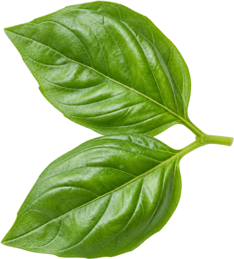

3. Accueil (home, onglet 1 après connexion) — cercle d'improvisation
Variante A retenue par Simo (le frigo). La variante B, qui montrait une assiette déjà préparée, est abandonnée : on scanne son frigo pour savoir quoi cuisiner, pas un plat terminé.
Le cercle, dans l'Accueil

Menoo
Bonjour Karim
Aucun repas n'est prévu ce soir.
Scan IA
Pas d'idée pour ce soir ?
Menoo trouve une recette avec ce que vous avez déjà à la maison.
Improviser avec ma réserveou planifier ma semaine
Mes indicateurs
Budget de la semaine24,60 € dépensés sur 65 €
- Photo du frigo, seule forme ronde de l'app : bord blanc de 4 px, ombre légère, deux halos fins, respiration de 3,6 secondes. Immobile si les animations sont désactivées sur le téléphone.
- Il ne s'affiche que lorsque aucun repas n'est prévu ; sinon la carte « Ce soir » reprend sa place.
- Le lien « planifier ma semaine » garde la planification à portée de main, pour que l'improvisation ne la remplace pas.
- Barre de navigation : Accueil · Menus · Courses · Réserve · Suivi. Elle n'apparaît ici que parce que l'Accueil existe seulement une fois le compte créé.
- Photo du frigo seule, retenue par Simo : l'illustration avec la main serait illisible à cette taille.
- Cet écran est l'Accueil (`home`), premier onglet de l'app après connexion. Ce n'est pas la Landing (`landing`), qui est la page déroulante d'avant le compte. SPEC.md §0.13.